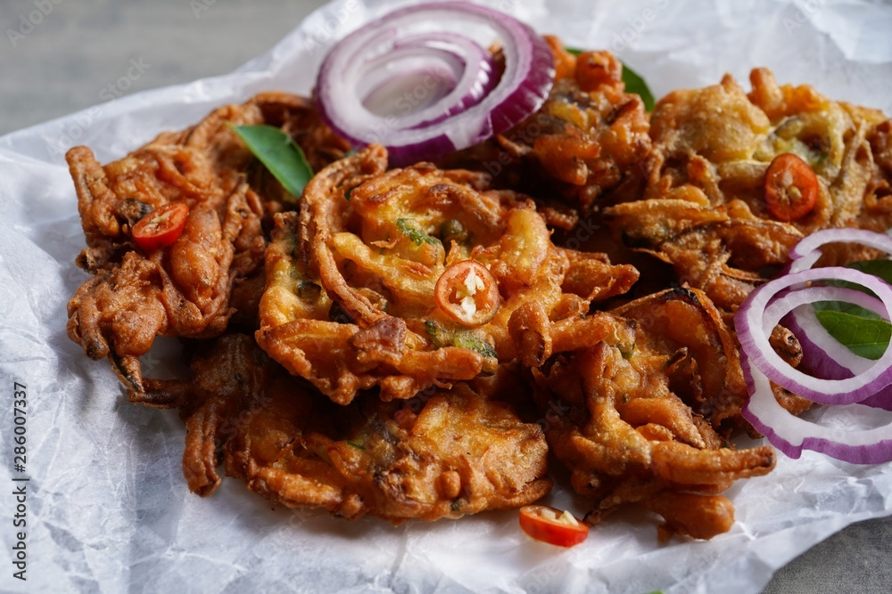

Vegetable Pakora
Description
Pakora is a popular South Asian snack made by deep-frying vegetables, chicken, or other ingredients that are dipped in a seasoned gram flour (besan) batter. These crispy fritters are enjoyed across India, Pakistan, Bangladesh, and other parts of South Asia.
Ingredients
- 1 cup gram flour (besan)
- 1/4 cup rice flour (optional)
- 1 teaspoon cumin seeds
- 1/2 teaspoon ajwain (carom seeds)
- 1/2 teaspoon turmeric powder
- 1 teaspoon red chili powder
- 1/2 teaspoon garam masala powder
- Salt to taste
- 1/2 cup water
- 2-3 green chilies, finely chopped
- 1 small onion, thinly sliced
- 1-2 potatoes, thinly sliced or grated
- 1 cup mixed vegetables (spinach, cauliflower, bell peppers, etc.), finely chopped
- Fresh coriander leaves, chopped
- Oil for deep frying
Steps
- Mix gram flour, rice flour, cumin seeds, ajwain, turmeric powder, red chili powder, garam masala, and salt in a bowl.
- Gradually add water to make a smooth, thick batter.
- Stir in green chilies, onion, potatoes, mixed vegetables, and coriander leaves.
- Heat oil in a deep frying pan over medium heat.
- Drop small portions of the batter into hot oil.
- Fry until golden brown and crispy, about 4-6 minutes per batch.
- Drain on paper towels.
- Serve hot with green chutney, tamarind chutney, or ketchup. Enjoy!